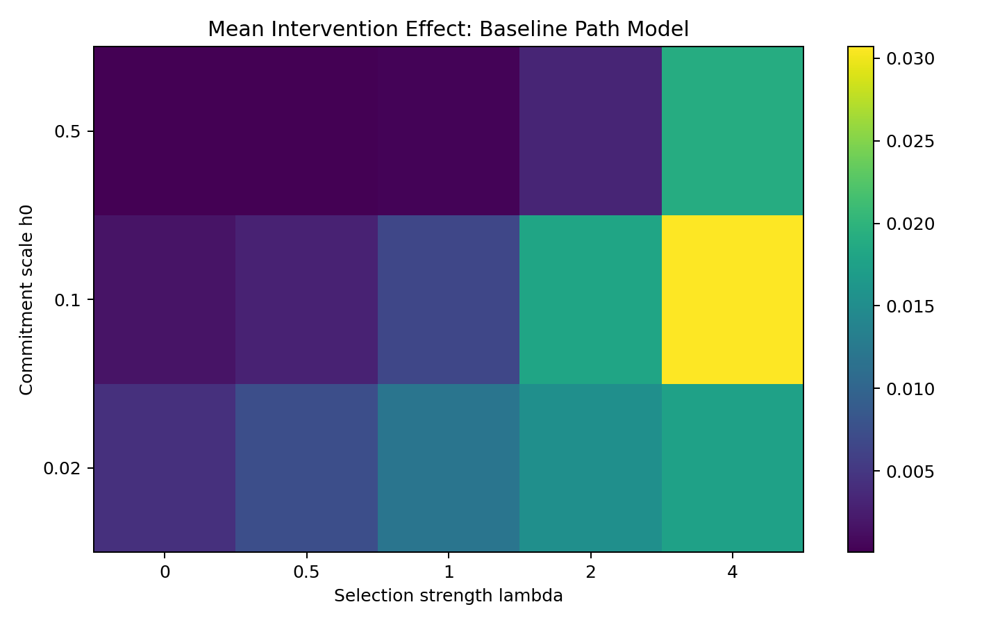
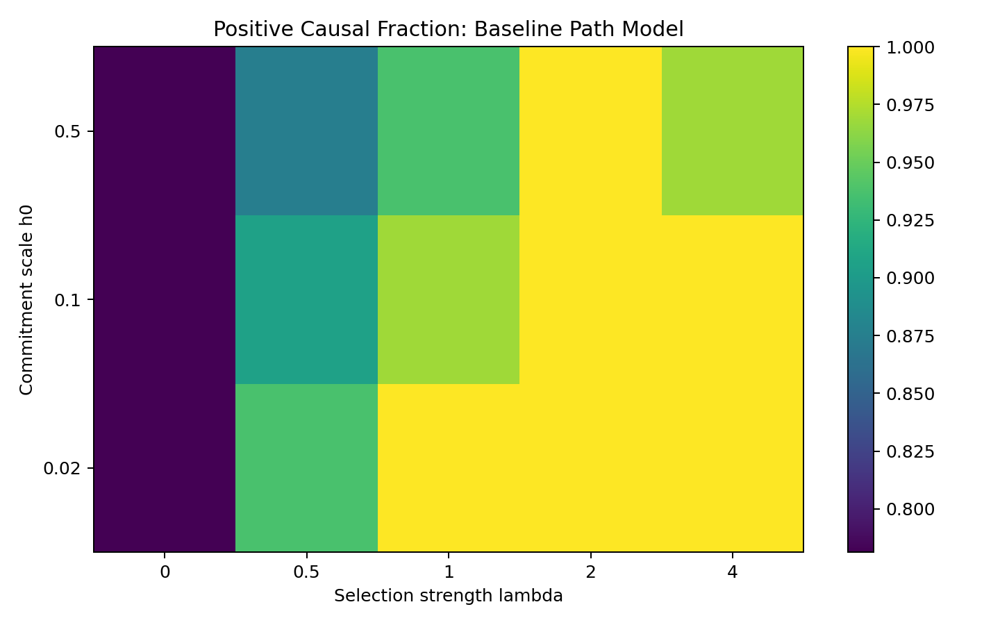
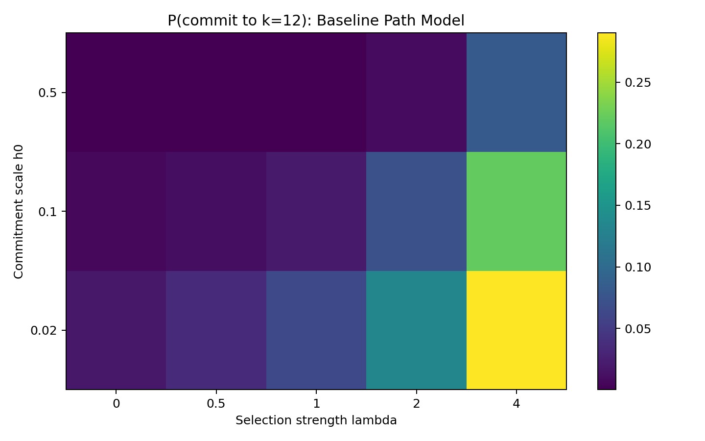
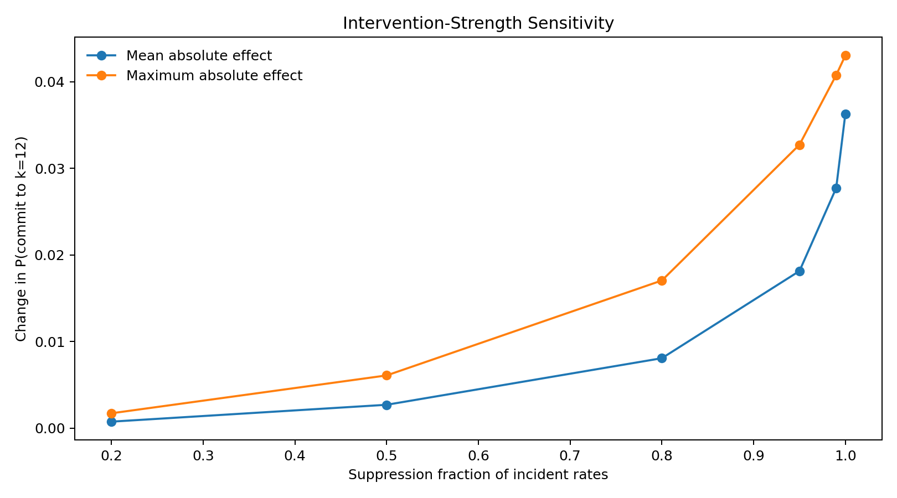
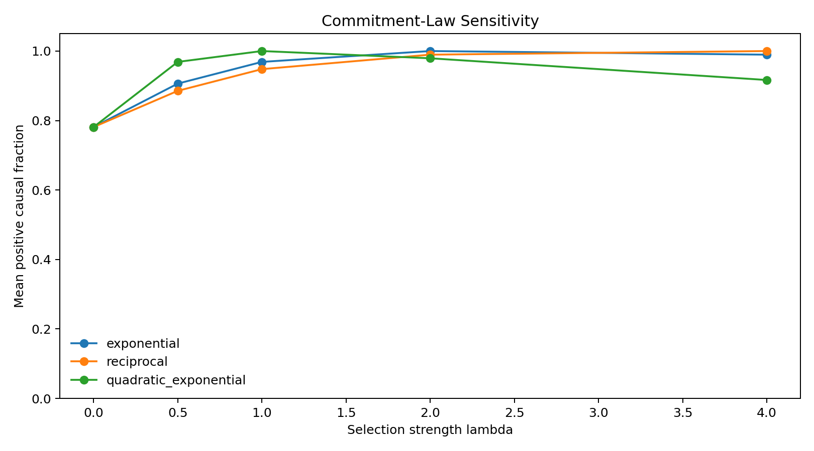
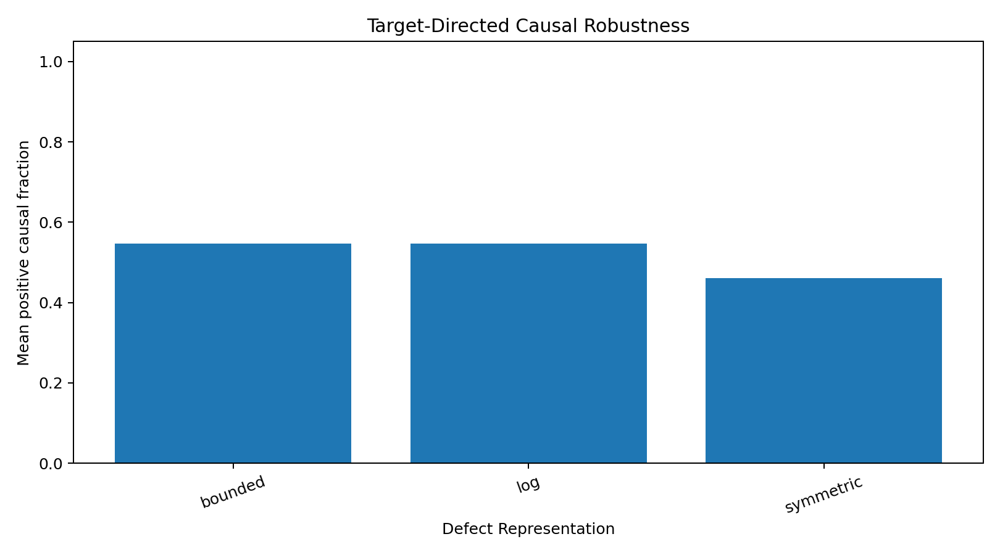
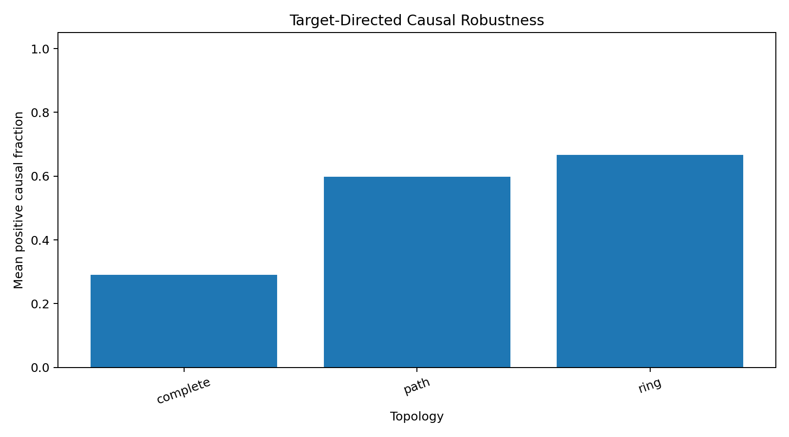

Entry 11
Robustness and Falsification Suite
Entry 11 does not introduce a new EDF mechanism.
entry_11
Outputs folder: output
Figures
Click any figure to enlarge it.
{kind=link}

baseline_positive_causal_fraction_heatmap.png
{kind=link}

baseline_target_probability_heatmap.png
{kind=link}

blockade_strength_sensitivity.png
{kind=link}

commitment_law_causal_robustness.png
{kind=link}

defect_causal_robustness.png
{kind=link}

topology_causal_robustness.png
{kind=link}
Tables
Embedded previews of CSV/TSV outputs with links to the full raw files.
| lambda | h0 | topology | initial_condition | defect_representation | commitment_law | block_factor | target_probability | … |
|---|---|---|---|---|---|---|---|---|
| 0.0 | 0.02 | path | boundary_pair | log | exponential | 0.05 | 0.018586530124721317 | … |
| 0.0 | 0.1 | path | boundary_pair | log | exponential | 0.05 | 0.006063007606001378 | … |
| 0.0 | 0.5 | path | boundary_pair | log | exponential | 0.05 | 0.0002661673836207466 | … |
| 0.5 | 0.02 | path | boundary_pair | log | exponential | 0.05 | 0.035607865490604566 | … |
| 0.5 | 0.1 | path | boundary_pair | log | exponential | 0.05 | 0.010531714371046018 | … |
| 0.5 | 0.5 | path | boundary_pair | log | exponential | 0.05 | 0.0005262597178513031 | … |
Preview only — columns truncated, rows truncated. Open full file
| lambda | h0 | topology | initial_condition | defect_representation | commitment_law | block_factor | target_probability | … |
|---|---|---|---|---|---|---|---|---|
| 2.0 | 0.1 | path | boundary_pair | log | exponential | 0.0 | 0.07245479615770108 | … |
| 2.0 | 0.1 | path | boundary_pair | log | exponential | 0.01 | 0.07245479615770108 | … |
| 2.0 | 0.1 | path | boundary_pair | log | exponential | 0.05 | 0.07245479615770108 | … |
| 2.0 | 0.1 | path | boundary_pair | log | exponential | 0.2 | 0.07245479615770108 | … |
| 2.0 | 0.1 | path | boundary_pair | log | exponential | 0.5 | 0.07245479615770108 | … |
| 2.0 | 0.1 | path | boundary_pair | log | exponential | 0.8 | 0.07245479615770108 | … |
Preview only — columns truncated. Open full file
| lambda | h0 | topology | initial_condition | defect_representation | commitment_law | block_factor | target_probability | … |
|---|---|---|---|---|---|---|---|---|
| 0.0 | 0.02 | path | boundary_pair | log | exponential | 0.05 | 0.018586530124721317 | … |
| 0.0 | 0.02 | path | boundary_pair | log | reciprocal | 0.05 | 0.018586530124721317 | … |
| 0.0 | 0.02 | path | boundary_pair | log | quadratic_exponential | 0.05 | 0.018586530124721317 | … |
| 0.0 | 0.1 | path | boundary_pair | log | exponential | 0.05 | 0.006063007606001378 | … |
| 0.0 | 0.1 | path | boundary_pair | log | reciprocal | 0.05 | 0.006063007606001378 | … |
| 0.0 | 0.1 | path | boundary_pair | log | quadratic_exponential | 0.05 | 0.006063007606001378 | … |
Preview only — columns truncated, rows truncated. Open full file
| lambda | h0 | topology | initial_condition | defect_representation | commitment_law | block_factor | target_probability | … |
|---|---|---|---|---|---|---|---|---|
| 0.0 | 0.02 | path | boundary_pair | log | exponential | 0.05 | 0.018586530124721317 | … |
| 0.0 | 0.02 | path | boundary_pair | bounded | exponential | 0.05 | 0.018586530124721317 | … |
| 0.0 | 0.02 | path | boundary_pair | symmetric | exponential | 0.05 | 0.018586530124721317 | … |
| 0.0 | 0.02 | path | left_boundary | log | exponential | 0.05 | 0.03233077503156753 | … |
| 0.0 | 0.02 | path | left_boundary | bounded | exponential | 0.05 | 0.03233077503156753 | … |
| 0.0 | 0.02 | path | left_boundary | symmetric | exponential | 0.05 | 0.03233077503156753 | … |
Preview only — columns truncated, rows truncated. Open full file
| defect_representation | configurations | mean_target_probability | mean_positive_causal_fraction | median_abs_causal_effect | min_schur_footprint | extinction_success | positive_residence_success | … |
|---|---|---|---|---|---|---|---|---|
| bounded | 90 | 0.17953936914189805 | 0.5463173400673401 | 0.0042700229960575455 | 0.049893792882395795 | 1.0 | 1.0 | … |
| log | 90 | 0.07845391546166931 | 0.5469381313131313 | 0.002991582886210071 | 0.017511401732225 | 1.0 | 1.0 | … |
| symmetric | 90 | 0.030480481818882688 | 0.46138468013468015 | 0.0010120985239014482 | 0.0010735478903946567 | 1.0 | 1.0 | … |
Preview only — columns truncated. Open full file
| initial_condition | configurations | mean_target_probability | mean_positive_causal_fraction | median_abs_causal_effect | min_schur_footprint | extinction_success | positive_residence_success | … |
|---|---|---|---|---|---|---|---|---|
| boundary_pair | 135 | 0.0959243297539434 | 0.631712962962963 | 0.0021966315495297838 | 0.0010735478903946567 | 1.0 | 1.0 | … |
| left_boundary | 135 | 0.09639151452768997 | 0.4047138047138047 | 0.002975824757386688 | 0.0010735478903946567 | 1.0 | 1.0 | … |
Preview only — columns truncated. Open full file
| lambda | h0 | topology | initial_condition | defect_representation | commitment_law | block_factor | target_probability | … |
|---|---|---|---|---|---|---|---|---|
| 0.0 | 0.02 | complete | boundary_pair | log | exponential | 0.05 | 0.028296547821165616 | … |
| 0.0 | 0.02 | complete | boundary_pair | bounded | exponential | 0.05 | 0.028296547821165616 | … |
| 0.0 | 0.02 | complete | boundary_pair | symmetric | exponential | 0.05 | 0.028296547821165616 | … |
| 0.0 | 0.02 | complete | left_boundary | log | exponential | 0.05 | 0.02829654782116561 | … |
| 0.0 | 0.02 | complete | left_boundary | bounded | exponential | 0.05 | 0.02829654782116561 | … |
| 0.0 | 0.02 | complete | left_boundary | symmetric | exponential | 0.05 | 0.02829654782116561 | … |
Preview only — columns truncated, rows truncated. Open full file
| topology | configurations | mean_target_probability | mean_positive_causal_fraction | median_abs_causal_effect | min_schur_footprint | extinction_success | positive_residence_success | … |
|---|---|---|---|---|---|---|---|---|
| complete | 90 | 0.1315932490293527 | 0.2906881313131313 | 0.0006547297905399165 | 0.0010735478903946567 | 1.0 | 1.0 | … |
| path | 90 | 0.07982446966312028 | 0.5981691919191919 | 0.006835593952201567 | 0.09061374603202627 | 1.0 | 1.0 | … |
| ring | 90 | 0.07705604772997704 | 0.6657828282828283 | 0.005253198644992553 | 0.08802112051166781 | 1.0 | 1.0 | … |
Preview only — columns truncated. Open full file
Source files
Theoretical notes
Data files
No files in this category.
Other artifacts
No files in this category.